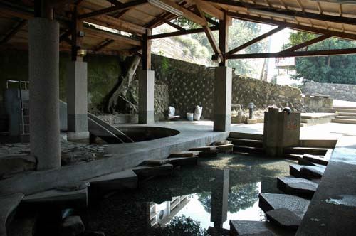
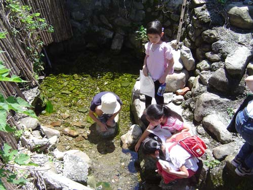
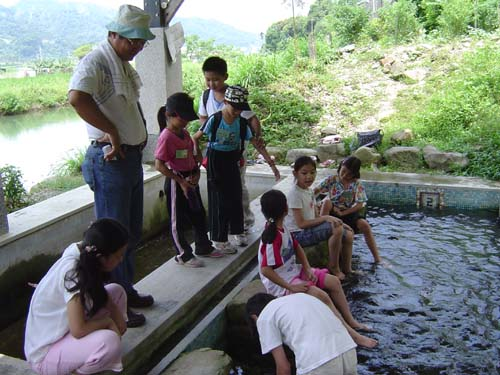

愛蘭台地 擁有 愛蘭、六角亭、紹興池 三處洗衣池。 由於台地下蘊藏豐沛的地下泉脈，在台地西側形成多處水質清澈的天然湧泉， 過去不僅是埔里酒廠釀酒的重要水源，也是附近居民洗衣、取水與兒童戲水的生活場所。
其中，「紹興池」 旁的紹興泉， 更與埔里著名的紹興酒有密切關係。過去埔里酒廠製造紹興酒時， 使用的水源之一就在此處；在日治時代，這口泉水甚至被視為製酒的重要祕方， 因此被稱為 「紹興泉」。
對早期居民而言，洗衣池不只是洗衣服的地方，也是婦女們聊天、交流消息的重要場所。 大家一邊洗衣、一邊分享生活大小事，使洗衣池成為社區重要的 「情報交換中心」。
如今，現代家庭已不再需要到洗衣池洗衣，但這些老洗衣池仍承載著居民共同的生活記憶， 也見證了愛蘭台地早期的生活方式與社區情感。
阿婆洗衣池 不僅是愛蘭台地的公共設施， 更是串聯起世代居民情感的紐帶。從清晨到黃昏，婦女們提著衣物來到池邊， 在洗衣的節奏中交談、分享、互助——池水映照著笑臉，也承載著生活的酸甜苦辣。 紹興泉的甘甜水質，釀出了遠近馳名的紹興酒，也滋養了這片土地的人情與故事。 當我們走進愛蘭台地，俯身凝視這些依然清澈的洗衣池，彷彿還能聽見 昔日婦女們的談笑聲，看見孩子們在水邊嬉戲的身影。 這是埔里台地最樸實、最溫暖的鄉土記憶，也是我們共同的珍貴資產。